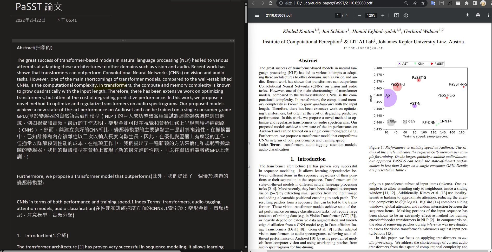
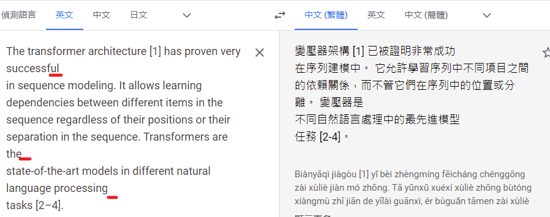
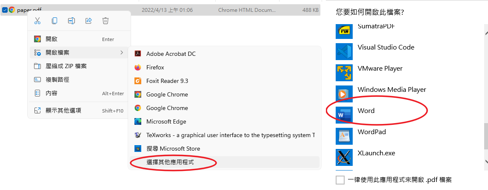
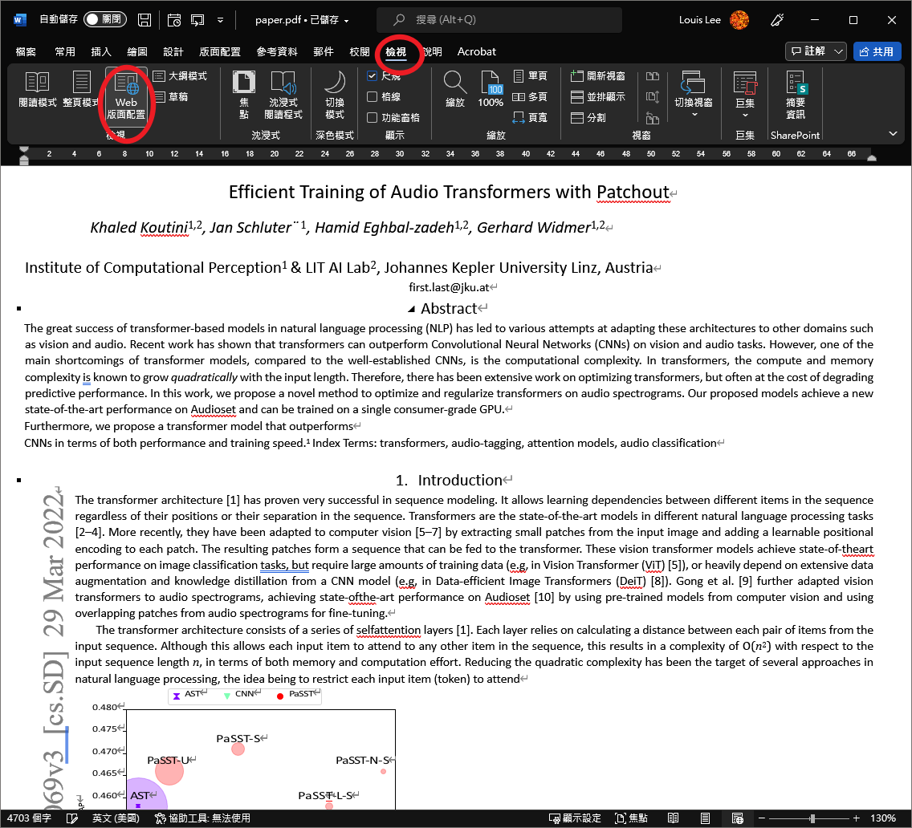
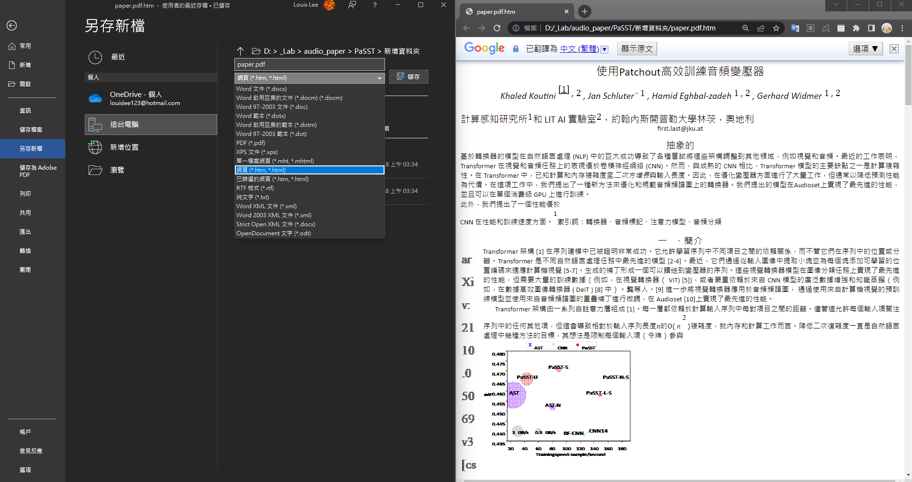
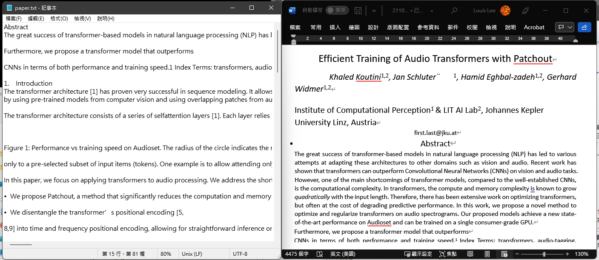
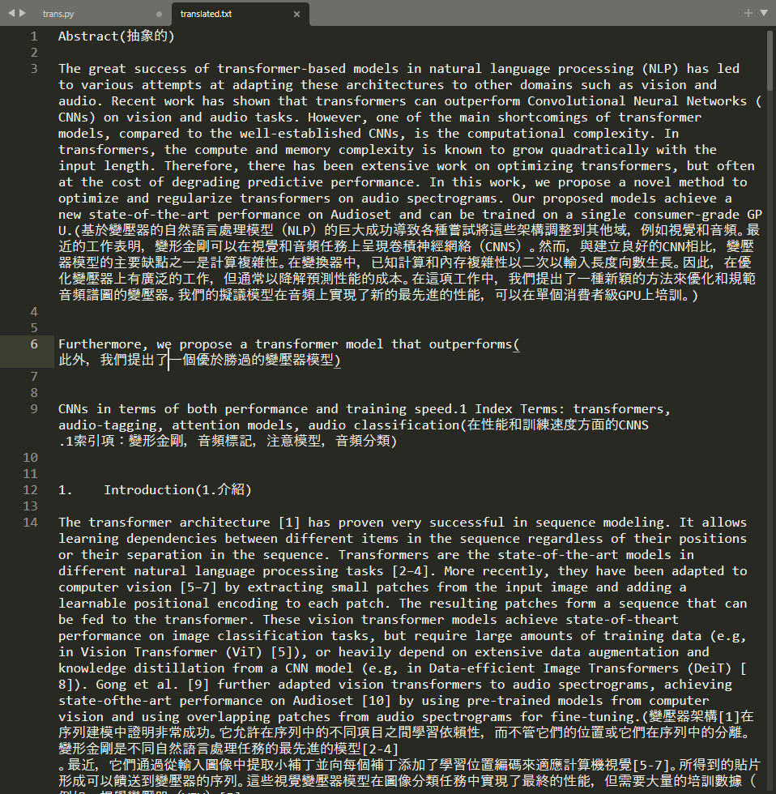

論文翻譯方法 使用word處理斷句
論文翻譯-使用word段句-中英文對照
前後比較圖

描述現有翻譯問題
在PDF格式下，翻譯PDF複製的文件會有斷句不完整的問題

使用word開啟論文PDF檔案可以解決此段距問題。

使用web 瀏覽模式，斷句自動處理，現在複製段落也有正確的斷句了

用Html格式儲存文件，開啟Html網頁檔案，使用google翻譯能夠正常的翻譯整份文件。

但我的閱讀習慣是中文接續英文段落，因此換一個方法。
手動，刪除圖片,公式，避免影響翻譯後排版，複製文字到文件檔上，命名paper.txt

使用python 腳本逐行翻譯
# trans.py
from sys import argv
from googletrans import Translator
t = Translator()
def translate(text):
return t.translate( text, dest="zh-TW" ).text
readfile = "./paper.txt"
writefile = "./translated.txt"
with open( readfile, 'r') as f:
lines = f.readlines()
import time
newfile = open( writefile , 'w')
for line in lines:
if line.strip() == '':
newfile.write('\n')
continue
time.sleep(3)
line = line[:-1] + '(' + translate(line) + ')\n\n'
newfile.write( line )
print( line )
newfile.close()
執行腳本: python trans.py，程式會把段落(paragraph)一段一段的文字用google api來翻譯，預設每三秒暫停一次，避免太過頻繁的請求而被鎖IP。
最終結果:

將文字檔案放到喜歡的閱讀工具上(notion, hackmd, onenote, everynote),可以手機上面閱讀,或是列印紙本閱讀。